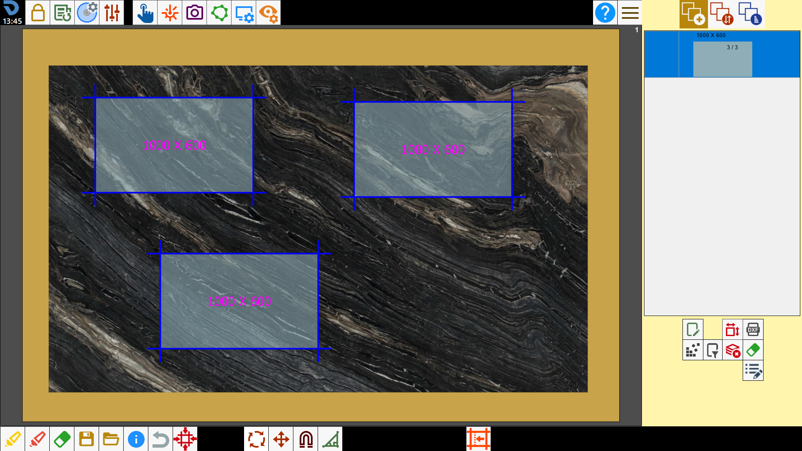
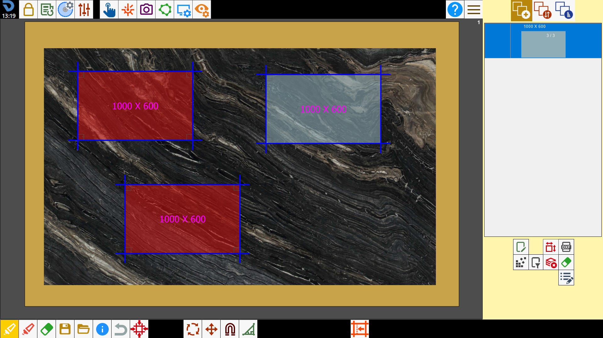
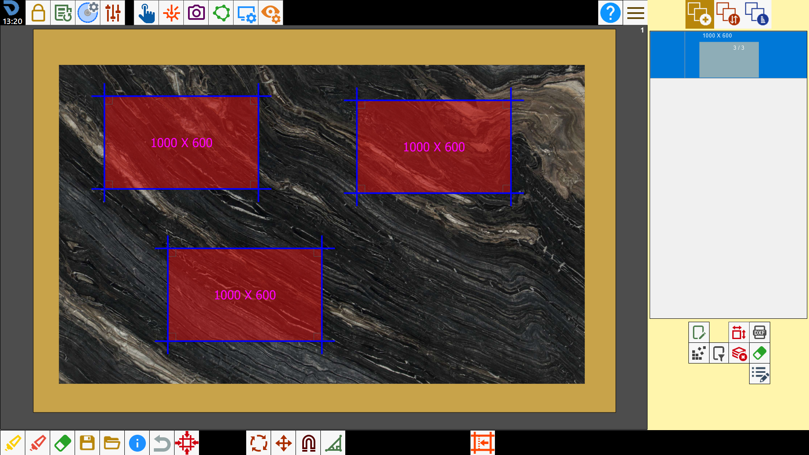
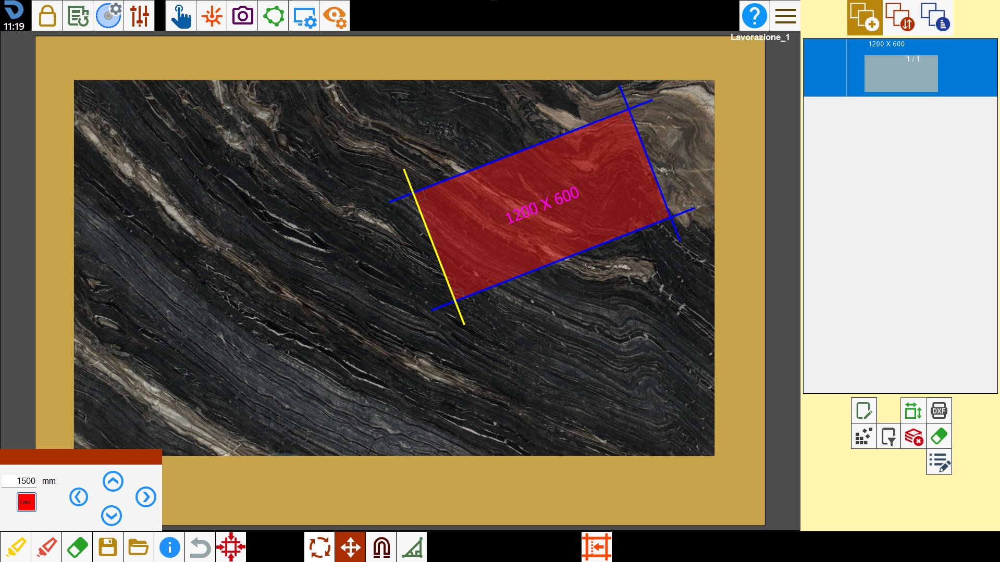
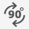
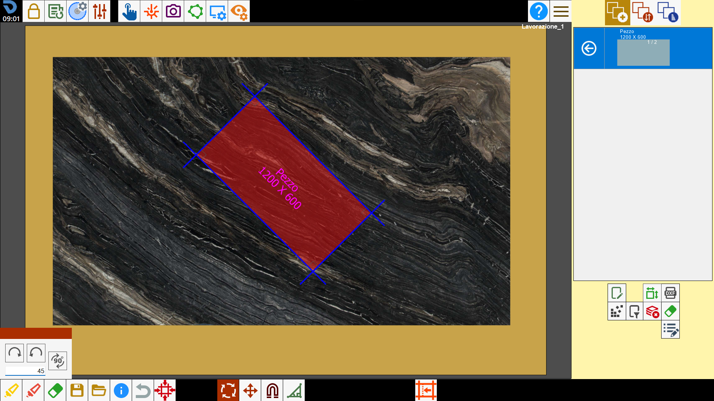
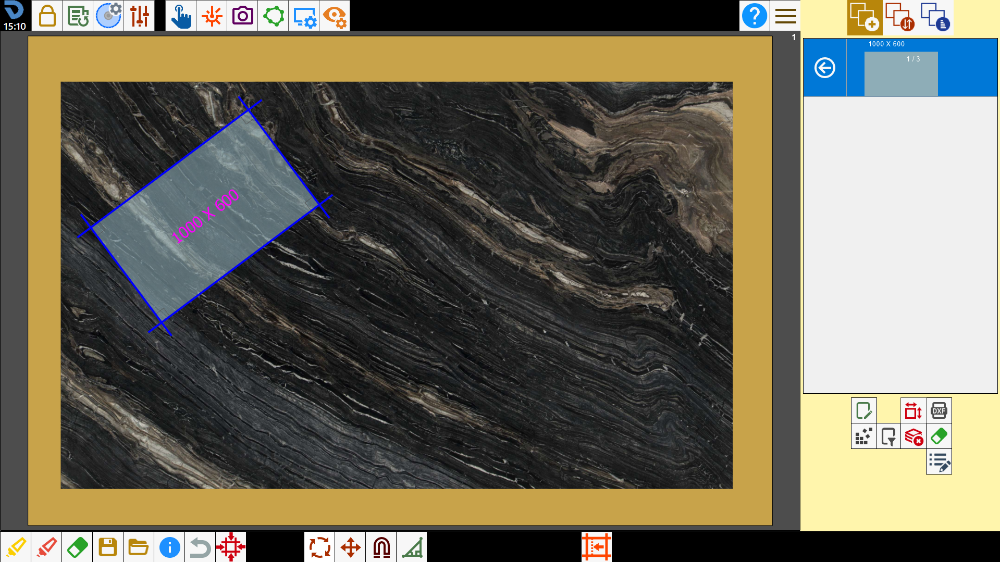
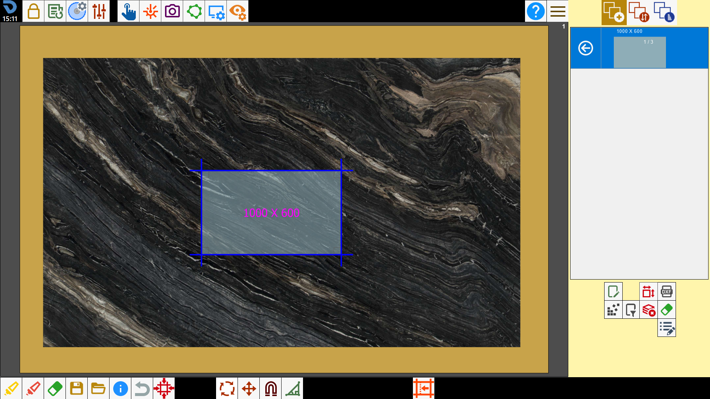

The operator can modify the positioning of the pieces on the bench through interaction on the work area.

Functions
 | Multiple selection |
 | Select all |
 | Remove pieces |
 | Move pieces |
 | Rotate pieces |
 | Cancel operation |
 | Magnetize the pieces |
Miter Cut | |
Edit commercial piece |
Select the pieces
To select a piece, press inside it. The background of the pieces will be blue when not selected, red when selected.

Multiple selection
Pressing the button activates the multiple selection mode. In this mode it will be possible to select multiple pieces simultaneously. To deselect a piece, press inside a perimeter already selected.

Select all pieces
With this button is possible to select or deselect simultaneously all pieces present on the working area.

Remove the pieces
Pressing the button, the selected pieces are removed from the working area and are inserted again into the pieces list, to make them available at a second moment.

Move pieces
To move the selected piece, hold inside of the perimeter and drag it on the working area.
Alternatively it is possible to use the panel for the shift with directional arrows.

NOTEThis function is applied to all selected pieces. So is possible to move more pieces simultaneously.
Buttons
 | Directional arrows |
 | Move along the axis of the side |
Move pieces along the classic axes
You want to apply to the piece a displacement of 1500 mm towards left.


Move the pieces along the side axis
You want to apply to the piece a displacement of 1500 mm towards the left with respect to the axis of the piece's side.
To do it the button related must be activated.


Rotate the pieces
To rotate selected pieces, hold outside of perimeter and drag them on the work area.
Alternatively it’s possible to use the panel for the rotation with determined angles.

NOTEThis function is applied to all selected pieces. Then it is possible to rotate more pieces simultaneously.
Buttons
 | Clockwise rotation |
 | Counterclockwise rotation |
 | Rotation 90_ |
Apply rotation
You want to apply to the piece a rotation of 45 degrees clockwise.


Cancel operation
This function serves to cancel the last operation executed.
For example if the operator makes a mistake deleting a piece, by pressing this button he can go back to before he deleted the piece.
NOTEThere is not a history of the changes made but if the button is crushed several times several operations are canceled.

